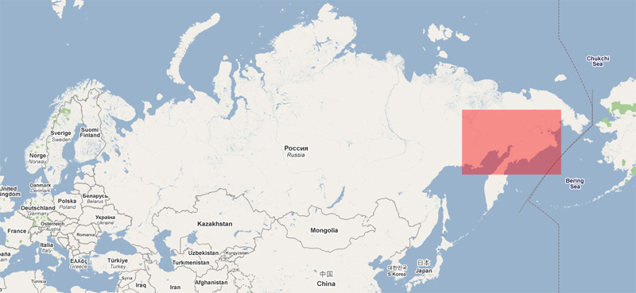

The purpose of this excursion is to have fun in mudd and to get from Magadan to Chukotka by land through northern Kamchatka. We begin where MotoSyberia ended in 2007, so we will tele-transport ourselfs the evil way with all the equipment to Magadan.
The first part of tele-transportation will be organized by Wojtek (from MotoAfryka). The other part of tele-transportation will be organized by the devil himsel, because it's a mistery how to soar such a big amount of heavy stuff in the air. After landing in Magadan we go streight to a Chinees restaurant, where you can eat a really delicious pig in sweet-sour sauce.

From here we will drive to Omsukchan, although it would be better to get a truck, to keep knobes fresh and digest the sweet & sour pig in peace.
Here we have arrived to areas where there is no travelling overland in summer. Swamps, rivers, cute bears and mosquitos. In winter it's also calm. All traffic to Chukotka goes thrugh the Kolyma zimnik (winter road) and then through the northern parts of Chukotka. There are no zimnik's going to Kamchatka this way either.
We will be passing throug 2 villages: Evensk and Kamenskoye. These villages have contact with the outside world only by sea and by air. Until 2007 guys from US were building a zimnik from Omsukchan to a gold mine (towards the north-east). From there it was possible to get to Evensk.
I managed to contact few specialists in this region (hunters, drivers going to Kubaka gold mine in winter) and any such conversation ends in a sad statement "Malciki, there is no chance you even get to Evensk". I found a way to deal with this. I dont ask any question about this route and avoid this sensitive topic. Alleluya and go go go!
Plan minimum: Omsukchan - Evensk
Evensk looks to be so close, that we just must get there. Even if it means walking there with the bike on the back.
Plan orgasm 1: get to northern Kamchatka (Koriak AO)
The part from Evensk (or Gizhiga) to Kamenskoye looks to be the most difficult of all difficult parts we will cross. It will be even harder than I can imagine now. How many times harder? The first person to know this will be my mother through a sat phone.
Plan multiple orgasm: A) get to Chukotka, B) or get to southern Kamchatka
Our main problems during summer 2009 will be:
- swamps (yerk! its so discousting I dont even want to think about this)
- rivers, but I mean RIVERS; we are still thinking about this problem; we have few ideas: Grzesiek will be happy to give his KTM for the Big Water Tests;
- fuel - no metter how I count it's not enough; Grzesiek will be happy to go to Evensk or Kamenskoye by foot and bring some fuel; this boy is very optimistic about this trip;
- food - no metter how I count it's not enough; from all temptations that satan prepared for us, food is the one I love the most; we will have dry food with us and I hope we will catch some fish finally;
- bears - what? go away you hairy monster!

We have few alternative plans. But one thing is sure. There will be mudd, mudd, mudd, mudd, mudd, mudd, mudd, mudd mixed with stinking male sweat. This whole unknown which is waiting for us i so so, SO SO exciting I have an errection.